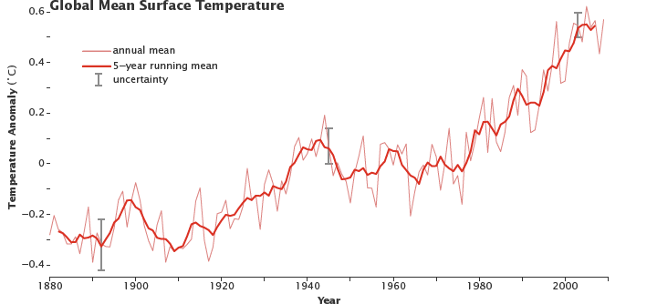

Throughout its long history, Earth has warmed and cooled time and again. Climate has changed when the planet received more or less sunlight due to subtle shifts in its orbit, as the atmosphere or surface changed, or when the Sun’s energy varied. But in the past century, another force has started to influence Earth’s climate: humanity
How does this warming compare to previous changes in Earth’s climate? How can we be certain that human-released greenhouse gases are causing the warming? How much more will the Earth warm? How will Earth respond? Answering these questions is perhaps the most significant scientific challenge of our time.
What is Global Warming?
Global warming is the unusually rapid increase in Earth’s average surface temperature over the past century primarily due to the greenhouse gases released by people burning fossil fuels.The global average surface temperature rose 0.6 to 0.9 degrees Celsius (1.1 to 1.6° F) between 1906 and 2005, and the rate of temperature increase has nearly doubled in the last 50 years. Temperatures are certain to go up further.
Despite ups and downs from year to year, global average surface temperature is rising. By the beginning of the 21st century, Earth’s temperature was roughly 0.5 degrees Celsius above the long-term (1951–1980) average. (NASA figure adapted from Goddard Institute for Space Studies Surface Temperature Analysis.)
How is Today’s Warming Different from the Past?
Earth has experienced climate change in the past without help from humanity. We know about past climates because of evidence left in tree rings, layers of ice in glaciers, ocean sediments, coral reefs, and layers of sedimentary rocks. For example, bubbles of air in glacial ice trap tiny samples of Earth’s atmosphere, giving scientists a history of greenhouse gases that stretches back more than 800,000 years. The chemical make-up of the ice provides clues to the average global temperature.
Using this ancient evidence, scientists have built a record of Earth’s past climates, or “paleoclimates.” ...The paleoclimate record combined with global models shows past ice ages as well as periods even warmer than today. But the paleoclimate record also reveals that the current climatic warming is occurring much more rapidly than past warming events.